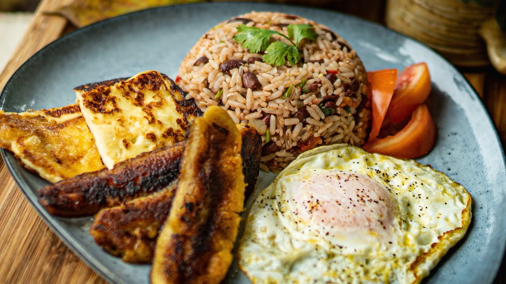

Gallo Pinto

El gallo pinto o gallopinto es un plato tradicional de Centroamérica que consiste en una combinación de arroz con frijoles. El gallo pinto tiene una larga historia y ha sido importante para la cultura de numerosos países latinoamericanos, donde cuenta con diversas versiones. Se le considera el plato típico por excelencia en Costa Rica y Nicaragua.
El gallo pinto consta de los siguientes ingredientes:
- Arroz
- Frijoles
- Salsa lizano
- Olores como cebolla, chille, sal y pimienta
- Se acompaña de platano maduro, queso frito, aguacate y huevo entre otros
Go back